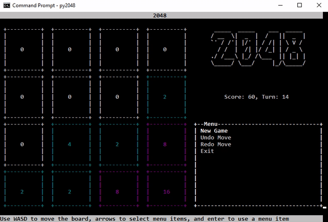
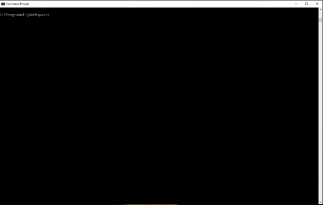

A library for creating CUI/TUI interfaces with pre-built widgets in python.
Easily build text-based user interfaces on both Linux and Windows.

py_cui
py_cui is a python library meant to simplify writing command line user interfaces in python. It is built upon the curses module, which is traditionally a unix-specific, however, you may use windows-curses to gain compatibility for py_cui on windows.
The main advantage py_cui has over typical text-based user interface builders is that it relies on widgets and a grid layout manager like most traditional graphical user interfaces. You may define a grid size, and then drop predefined widgets onto it into specific grid locations. Widgets can also be stretched accross multiple grid rows and columns. If you've ever made a Tkinter GUI, you will feel right at home.
Examples
Below are some screenshots/gifs of programs written with py_cui. Additional (simpler) examples are available in the examples/ directory of this repository.
py_cui_2048 - A command line version of the classic 2048 game
py_cui_2048 is a demo of using py_cui to build simple CUI games and applications. The entire game was made in under 400 lines of code.

unipkg - A command line utility that will allow for managing all installed package managers on your system through one cli interface
unipkg is currently an in-progress project, check back in the future to see a screenshot, and more information.
pyautogit - A command line interface for managing git repositories
pyautogit is the first larger scale project written in py_cui. Feel free to use it as a guide to programming with py_cui.

Powered by py_cui
Below is a table of python projects developed with the help of py_cui. If you've made something, feel free to make a pull request to add it!
| Project | Description |
|---|---|
| pyautogit | A command line UI for interfacing with git features for multiple repositories. |
| py_cui_2048 | A CUI version of the classic 2048 game. |
| unipkg | A CUI interface for managing all installed package managers on your system. (In-Progress) |
| tinypub | A console-based ebook reader. |
| hue-tui | A CUI controlling for Philips Hue lights. |
License
BSD 3-Clause License
Copyright (c) 2019-2020, Jakub Wlodek